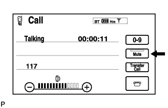
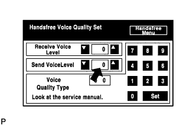
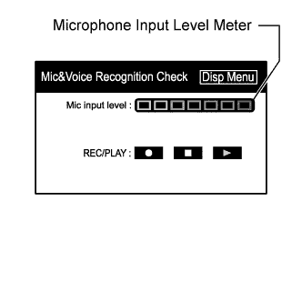

NAVIGATION SYSTEM > The Other Caller cannot Hear Your Voice, or Your Voice is too Quiet or Distorted |
| 1.CHECK CELLULAR PHONE |
Check if the other side can hear your voice properly.
|
| ||||
| OK | |
| 2.CHECK SETTINGS |
 |
Check if the mute switch is set to on.
|
| ||||
| OK | |
| 3.CHECK SETTINGS |
 |
Enter the "Handsfree Voice Quality Set" mode (Click here).
Check if the Send Voice Level is set to "0".
Check if the Send Voice Level is set to the minimum or maximum level.
|
| ||||
| OK | |
| 4.CHECK MICROPHONE (DISPLAY CHECK MODE) |
 |
Enter the "Mic & Voice Recognition Check" mode (Click here).
When a voice is input into the microphone, check that the microphone input level meter changes according to the input voice.
|
| ||||
| OK | ||
| ||